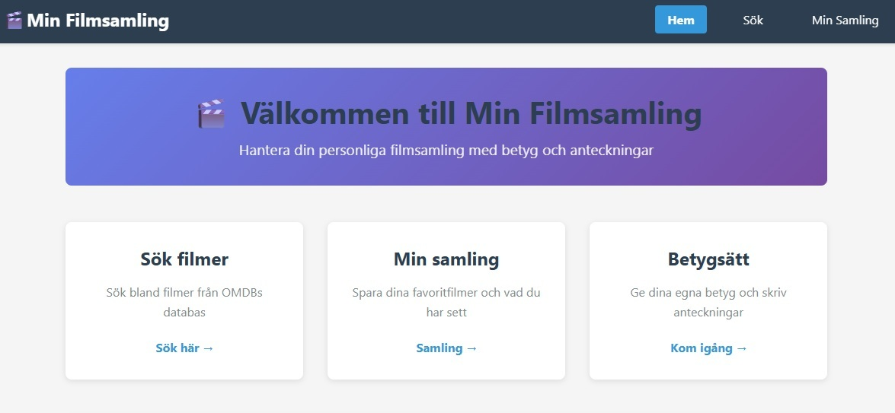

Film homepage
This is a film-project, one of the first projects we did in the frontend framework course.
It uses the OMDB API so you can find the film you are looking for.
You can rate the films and save them to your collection.